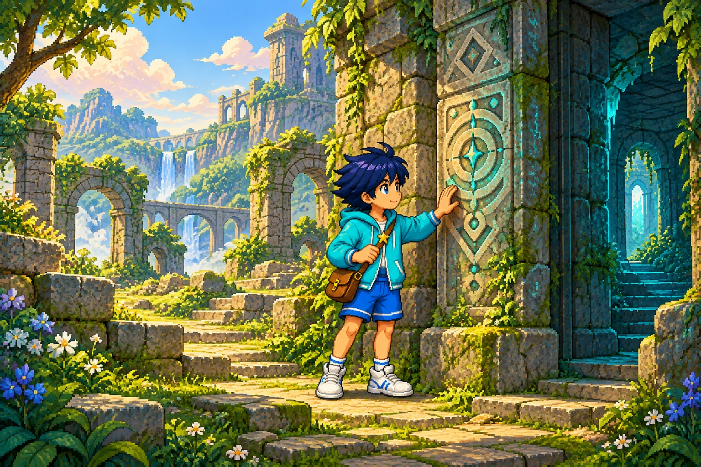

Le héros
Un jeune explorateur curieux, collectionneur de petits trésors. Son village et son passé font partie de son identité.
Veste turquoise · sacoche brune · étoile jaune
Couleurs illustratives, pas une palette officielle.
Quelques années après sa première aventure, Néolias explore un temple sur le dos d’une tortue géante. Aucun pouvoir magique : son intelligence, ses observations et les objets seront ses outils. Le secret de ce temple voyageur reste à inventer ensemble.
32 réponses renseignées · Plusieurs choix restent à explorer ou sont reportés.
Le document maître renseigne le premier épisode. Vos échanges définissent la suite. Les propositions ci-dessous restent à choisir ensemble.
Un jeune explorateur curieux, collectionneur de petits trésors. Son village et son passé font partie de son identité.
Un parchemin découvert dans les Ruines interdites conduit à trois masques : jungle, montagnes enneigées, monde volcanique. Des Gardiens les protègent. Le masque de la jungle donne le grappin.
Éléments du document maître du premier épisode.Selon votre choix pour cette suite, Néolias a rendu les masques aux gardiens et est rentré au village. Quelques années passent. Il repart sans les anciens pouvoirs.
Continuité choisie dans vos échanges ; la fin n’est pas établie dans les sections consultées du document maître.Dans le premier épisode, réunir les masques pouvait réveiller une créature immense et dangereuse. Le document laissait encore ouverts plusieurs détails. Ils ne deviennent pas automatiquement des faits de la suite.
Une suite autonome, compréhensible sans jouer au premier. Des clins d’œil possibles et davantage d’histoire sur l’univers.
Une aventure solo en 3D, centrée sur l’exploration et les énigmes, sans combat. Caméra automatique et commandes simples. Le tout premier prototype est réduit à un étage avec une ou deux pièces, directement jouable.
Pas de compte à rebours pour s’échapper. L’intelligence doit primer sur les gestes techniques difficiles. Le combat, la défaite et les systèmes d’indices sont exclus. Les essais sont illimités et la difficulté progresse.
Aucun pouvoir magique, au départ comme pendant toute l’aventure. Observer, comprendre, manipuler et combiner des objets : les énigmes reposent sur l’intelligence. Les commandes restent simples.

Un temple sur le dos d’une tortue géante. Néolias ne possède et n’acquiert aucun pouvoir magique.
Des archéologues du village appellent Néolias pour déchiffrer les gravures d’un temple. Pendant son exploration, le paysage derrière les fenêtres se met à bouger : le temple repose sur une tortue géante qui reprend sa route. La passerelle d’accès s’est repliée. Néolias doit comprendre les mécanismes du temple pour retrouver la terre ferme… et découvrir pourquoi ce sanctuaire voyage.
Option 1A retenue : Néolias cherche un objet et découvre un secret plus grand. L’objet et la révélation précise restent à inventer.
Néolias résout une dernière énigme et sort du temple pour retrouver la terre ferme. Le mécanisme précis reste à concevoir. Aucun combat, aucune urgence chronométrée et aucune possibilité de mourir.
Le parchemin qui mène à un danger ancien existe déjà dans Neolias 1. Recommandation : garder la découverte progressive, mais chercher une autre révélation. Le décor est validé ; le début proposé et la révélation restent à choisir.
Décidé : temple sur une tortue géante, sans pouvoirs magiques. Bloc 1 répondu : 1A, recherche d’un objet et découverte d’un secret plus grand ; 2A, dernière énigme puis sortie. Bloc 2 : choisir le premier puzzle et la façon d’utiliser les objets.
Le bloc en cours est présenté plus bas. Les choix encore ouverts restent ouverts ; les nouvelles propositions ne sont pas ajoutées aux réponses comme si elles étaient validées.
Répondre au bloc énigmes ↓Vue 3D et caméra automatique. Aucun obstacle ne doit cacher les éléments d’une énigme ou le personnage. Proposition technique : une vue fixe par salle, légèrement en hauteur, avec masquage des murs gênants.
Les objets passent d’une salle à l’autre. Utiliser le même bouton pour parler, ramasser et manipuler. Pas de menu d’équipement de combat.
À préciser : comment ouvrir et sélectionner un objet dans le sac. Le bouton de tir, évoqué avant la suppression du combat, n’est pas retenu automatiquement.
Dernière consigne : un test très court, sans menu ni introduction narrative, pour voir le jeu et essayer quelques interactions. Cette étape remplace le premier périmètre de trois salles. L’aventure complète vise ensuite 10 à 20 minutes ; son nombre d’étages reste à choisir.
Votre choix : faire revenir Malo le marchand. Les explications et les nouveaux personnages ci-dessous sont des propositions.
Il a accompagné l’expédition avec ses provisions. La porte l’a enfermé dans le vestibule avant l’arrivée de Néolias. Il échange un objet utile contre un service ; pas besoin de boutique d’armes.
Proposition : accueil et échanges. Aucun passage secret illimité qui rendrait la prison incohérente.Un squelette sympathique qui range encore les objets du temple… depuis plusieurs siècles. Il cherche un contrepoids égaré et raconte des anecdotes amusantes sur le temple. Il ne donne aucun indice ni solution.
Nouveau personnage proposé : un ancien habitant du lieu, pas un visiteur inexplicablement coincé.Une petite gardienne de pierre qui s’éveille dans la lumière. Elle fait partie du temple et ne peut quitter son socle. Un rayon bien dirigé permet de lui parler.
Nouveau personnage proposé : relier une rencontre à une énigme lumineuse.Proposition à réévaluer avec le prototype réduit : Malo et, au maximum, un nouveau personnage. Leur présence dans le premier test n’est pas encore décidée.
Le parcours ci-dessous avait été proposé pour trois salles. Il reste une réserve d’idées, pas le périmètre du prototype actuel : choisir une ou deux expériences pour un seul étage. Aucun combat ni limite de temps. La place du son dans les énigmes reste à préciser.
Ces schémas montrent les solutions pour notre travail de conception. Ils ne valident pas les énigmes et ne sont pas des aides destinées aux joueurs.
Une balance : le plateau gauche porte 4 unités. Trois poids de 1, 2 et 3 unités sont dispersés dans la salle. Il faut équilibrer le plateau droit. Le poids de 2 unités se trouve en explorant une petite hauteur accessible.
Solution : 1 + 3 = 4. La porte s’ouvre et reste ouverte ; une lentille se libère et rejoint le sac. Les masses sont marquées sur les poids ; la balance réagit immédiatement aux objets posés. Aucun indice supplémentaire n’apparaît.
Mathématiques visuelles + exploration. La lentille sera nécessaire dans la salle suivante.Un faisceau faible part vers l’est. Une lentille, placée dans son support, lui donne assez de portée. Deux miroirs sur supports fixes permettent de le guider jusqu’au récepteur.
Solution : insérer la lentille, orienter le premier miroir vers le nord, puis le second vers l’est jusqu’au récepteur. E fait tourner chaque miroir par quarts de tour. Le faisceau reste visible.
Premier puzzle lumineux. La porte s’ouvre et un prisme est récupéré. Positions alignées sur une grille, sans visée précise.La sortie exige deux récepteurs allumés simultanément. Le faisceau entrant arrive sur un emplacement central. Deux miroirs latéraux sont déjà présents ; aucun ennemi ni chronomètre.
Solution : placer le prisme pour diviser le rayon vers l’est et l’ouest ; orienter chaque miroir latéral vers le nord, où se trouvent les deux récepteurs. Les sceaux s’allument et la sortie s’ouvre.
Deuxième puzzle lumineux : réutiliser ce qui a été appris et l’objet gagné dans la salle précédente.Proposition : les portes résolues restent ouvertes. Les objets indispensables ne peuvent ni être jetés ni être vendus. Les mécanismes peuvent être réinitialisés sans perdre les objets. Ce sont des recommandations à valider.
Autres idées pour plus tard : retrouver un symbole visible depuis le bon angle ; remettre des dalles dans l’ordre indiqué par une fresque ; combiner une poignée et une tige pour actionner un levier hors de portée.
Pas de mort, de défaite, de cœurs, d’énergie ni de points. Une mauvaise configuration laisse le passage fermé. Le joueur peut déplacer, reprendre et essayer autant de fois qu’il le souhaite.
Pas de bouton d’aide, de conseil automatique ou de personnage qui suggère la solution. Les règles sont lisibles et les mécanismes réagissent aux actions ; le joueur mène seul son raisonnement.
Sauvegarde automatique des progrès et des objets dans le navigateur. L’aventure vise 10 à 20 minutes en une session, mais pourra être reprise. Le comportement exact au milieu d’une énigme reste à définir.
Les énigmes sont les mêmes pour tous : aucun sélecteur de difficulté. Leur complexité augmente au fil de la progression. Tester différentes configurations reste une manière valable de trouver la solution.
Recommandation de conception : rendre les manipulations réversibles, garder accessibles les objets obligatoires et ne jamais consommer un objet indispensable lors d’un essai incorrect. Le blocage vient de l’énigme à comprendre, pas d’une sauvegarde devenue impossible à terminer.
Première énigme : à concevoir par l’assistant puis à valider avec vous. La balance ci-dessus reste une proposition. Les solutions écrites dans ce brief servent à la conception ; elles ne seront pas des aides affichées dans le jeu.
Un prototype très court, directement jouable, sans menu ni introduction narrative. Il reprend quelques idées du brief pour voir et essayer l’expérience. Le périmètre initial de trois salles est réduit.
Une partie conçue pour se terminer en une session, avec sauvegarde dans le navigateur. Pour la suite : une énigme par pièce et une pièce par étage sont envisagées. Dix étages restent un exemple.
Mêmes habits et même visage pour Néolias, avec sa veste turquoise, sa sacoche et son étoile. Un style propre, sans viser les graphismes de Zelda. Plusieurs rendus 3D restent à proposer et à choisir.
Le mystère domine. Des musiques variées selon les pièces ou étages, des jingles pour les découvertes et les réussites, et des bruitages. Une chanson avec paroles reste une idée non tranchée.
Ordinateur uniquement pour le moment. Les manettes sont reportées et la Switch n’entre pas dans cette première étape. Aucun réglage de difficulté : les mêmes énigmes pour tous.
Les réglages de confort et la liste des idées futures ne sont pas prioritaires. Adrien et Nicolas évalueront le prototype en jouant. Les détails des tests et l’accord pour lancer le développement restent ouverts.
Le prototype sert à tester un étage et une ou deux pièces. La durée de 10 à 20 minutes concerne l’aventure visée ensuite. La progression par étages reste à préciser. Le lieu est désormais choisi : un temple sur une tortue géante.
Néolias et les Masques Perdus — Document maître
Le document mêle décisions, propositions et questions anciennes. Il sert à préserver l’identité et la continuité ; il n’impose ni la 2D, ni le chronomètre, ni le périmètre du premier jeu à Neolias 2.
Néolias, son village et son passé. Une aventure autonome qui dévoile davantage l’univers.
Explorer et comprendre. Des énigmes, des objets et un inventaire. Un seul joueur, aucun combat.
S’échapper, sans compte à rebours. Comprendre et manipuler, sans aucun pouvoir magique.
Vos réponses : 1A et 2A. Rechercher un objet, découvrir un secret plus grand, puis résoudre une dernière énigme pour sortir. Les autres options ci-dessous restent visibles comme historique, sans être retenues.
Deux questions pour ce bloc. A rappelle votre choix ou votre piste actuelle ; B, C et D proposent des alternatives ; E apporte une idée insolite. Vous pouvez mélanger les idées ou proposer les vôtres.
Début proposé, non validé : Des archéologues du village appellent Néolias pour déchiffrer les gravures d’un temple. Pendant son exploration, le paysage derrière les fenêtres se met à bouger : le temple repose sur une tortue géante qui reprend sa route. La passerelle d’accès s’est repliée. Néolias doit comprendre les mécanismes du temple pour retrouver la terre ferme… et découvrir pourquoi ce sanctuaire voyage.
Le décor est original ; donnons maintenant une raison à ce temple de voyager.
Sortir est votre objectif ; choisissons une conclusion qui utilise vraiment la tortue et le temple.
Bloc répondu : 1A et 2A. L’objet, le grand secret et le mécanisme final restent à inventer. Le bloc suivant porte sur les énigmes et les objets.
Le temple sur une tortue géante, l’absence de pouvoirs et de combat, la mission de recherche et la sortie par une dernière énigme sont retenus. Les propositions suivantes restent à choisir.
Une seule idée pour tester si les manipulations sont plaisantes, avant de concevoir les autres salles.
Un inventaire peut enrichir les énigmes, mais trop de menus rendrait les commandes pénibles.
Répondez dans la conversation, par exemple « 3B, 4C ». Vous pouvez mélanger les idées. Le prochain bloc sera adapté à votre réponse.
Les textes ci-dessous reformulent votre discussion. Chaque réponse reste modifiable. Les choix explicites sont validés ; les réponses comportant encore des arbitrages restent à discuter.